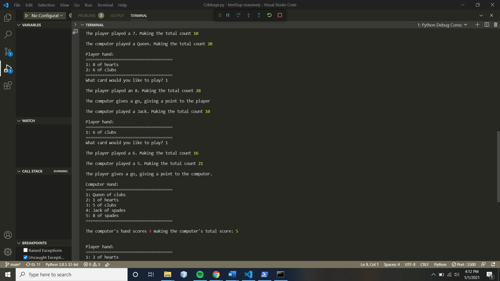

Cribbage Program in python
A basic terminal application that simulates the popular card game Cribbage.

This project was originally inspired by my grandpa, with whom I play cribbage with. I originally intended to write an application that took a list of cards and compared all of the different combinaitons of them to see which hand would yield the most possible points after depositing two cards out of the six. Instead I decided to develop the entire game into a terminal based application after taking Intro to Python at my University.
Click Here to View GitHub Repository